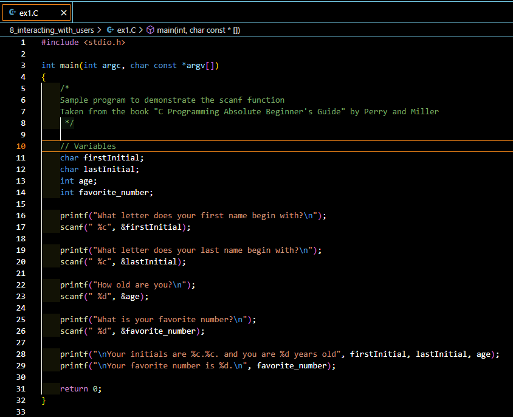

Introduction
For beginner C programmers, understanding how to interact with users through input is crucial. The scanf() function is a fundamental tool in C programming that allows you to read user input and store it in variables. This article will guide you through the basics of using scanf(), prompting users effectively, and solving common problems associated with it.
Understanding scanf()
The scanf() function is a versatile tool for reading input from the standard input, typically the keyboard. It allows you to store user input in variables of various data types, making it essential for interactive programs.
Basic Syntax and Usage
The basic syntax of scanf() is:
scanf("format_specifier", &variable);- Format Specifier: Defines the type of data to read (e.g.,
%dfor integers,%ffor floats). - Variable: The address of the variable where the input will be stored.
Reading Different Data Types
scanf() can read various data types, including:
- Integers:
%d - Floating-point numbers:
%f - Characters:
%c - Strings:
%s
Each data type requires a specific format specifier.
Common Pitfalls and How to Avoid Them
One common issue with scanf() is the handling of character inputs. For example, when reading characters, a newline character left in the input buffer can cause unexpected behavior. To avoid this, you can use a space before %c in the format specifier: scanf(" %c", &charVariable);.
Prompting Users for Input
To make your program user-friendly, always prompt users before expecting input. For example:
printf("Enter an integer: ");
scanf("%d", &integerVariable);Handling Multiple Inputs
scanf() can handle multiple inputs in a single call. For example:
scanf("%d %f", &integerVariable, &floatVariable);This reads an integer and a float from the input.
Using scanf() in Loops
When using scanf() in loops, ensure that the input buffer is managed correctly to avoid infinite loops or unexpected behavior. Consider using getchar() to clear the buffer if necessary.
Error Checking with scanf()
Always check the return value of scanf() to ensure that the expected number of inputs were successfully read. For example:
if (scanf("%d", &integerVariable) != 1) {
printf("Invalid input. Please enter an integer.\n");
}Advanced Techniques with scanf()
For more advanced input handling, consider using scanf() with width specifiers to limit the number of characters read for strings, or using fscanf() for file input.
Alternatives to scanf()
While scanf() is powerful, it has limitations. Functions like fgets() and sscanf() can be used for more controlled input handling, especially when dealing with strings.
Your Turn!
Now it’s your turn to practice using scanf(). Here’s a challenge for you:
Write a program that asks the user for their name, age, and favorite color. Then, create a story using this information. For example, if the user enters “Alice”, “25”, and “blue”, your program could output:
“Once upon a time, there was a 25-year-old adventurer named Alice. She embarked on a quest to find the legendary blue crystal, which matched her favorite color perfectly.”
Try to implement this program on your own. Use scanf() to gather the user’s input, and then use printf() to create and display the story.
Remember to handle potential input errors and consider how you’ll deal with names that include spaces.
Once you’ve completed the challenge, feel free to share your code or any questions you have in the comments section below. I’d love to see your creative stories and help with any issues you encounter!
Don’t forget to connect with me on any of the social media platforms listed at the bottom of this post. I’m always excited to engage with fellow programmers and hear about your coding journey!
Quick Takeaways
scanf()is essential for reading user input in C.- Always prompt users before expecting input.
- Be mindful of common pitfalls, especially with character inputs.
- Use error checking to ensure robust input handling.
Conclusion
Mastering scanf() is a vital skill for any C programmer. By understanding its syntax, handling different data types, and avoiding common pitfalls, you can create interactive and user-friendly programs. Keep practicing, and don’t hesitate to explore more advanced input handling techniques.
FAQs
- What is the purpose of
scanf()in C?scanf()is used to read formatted input from the standard input (keyboard).
- How do I read a string with spaces using
scanf()?- Use
fgets()instead ofscanf()to read strings with spaces.
- Use
- Why does
scanf()skip input after reading a character?- This is often due to leftover newline characters in the input buffer.
- Can
scanf()read multiple inputs at once?- Yes, by specifying multiple format specifiers in a single
scanf()call.
- Yes, by specifying multiple format specifiers in a single
- How do I handle invalid input with
scanf()?- Check the return value of
scanf()to ensure the correct number of inputs were read.
- Check the return value of
Engage!
I hope you found this guide helpful! Please leave your comments below and share this article with fellow programmers. Connect with me below!
References
This article was crafted to provide a comprehensive understanding of scanf() for beginner C programmers, ensuring you have the tools to create interactive and efficient programs.

Happy Coding! 🚀
You can connect with me at any one of the below:
Telegram Channel here: https://t.me/steveondata
LinkedIn Network here: https://www.linkedin.com/in/spsanderson/
Mastadon Social here: https://mstdn.social/@stevensanderson
RStats Network here: https://rstats.me/@spsanderson
GitHub Network here: https://github.com/spsanderson